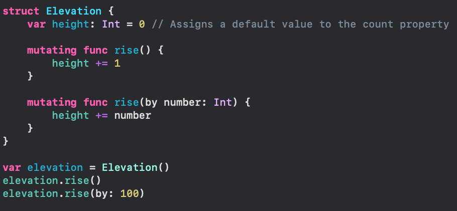

Instances
Structures define a new type
To use that type, you must create an instance of it, a process called initialization. After initialization, each instance inherits all the properties and features of the structure.

Initializers
All swift types come with a initializer, which is similar to a function that returns a new instance of the type.
The default initializer is init().
Instances created from the default initializer have a default value. The default String is "", the default Int is 0, and the default Bool is false.
The shorthand default initializer is more common and works the same as above
Default Values
During initialization of new instances, Swift requires you to set values for all instance properties
Using default property values, you can create a default state for each new instance of your custom types.
height is set to a default value of 0 when declaring the property. All new instance of Elevation will be created with that default value.
Memberwise Initializers
Sometimes you will want to create a new instance with a non-default value. When you define a new structure, Swift creates a special initializer, called a memberwise initializer, that includes all properties of a structure. The memberwise initializer allows you to set initial values for each property of the new instance.
Custom Initializers
You can customize the initialization process by defining your own initializer.
Custom initializers have the same requirement as default and memberwise initializers: All properties must be set to initial values before completing initialization.
Instance Methods
Instance Methods are functions that can be called on specific instances of a type. They provide ways to access and modify properties of the structure, and they add functionality that relates to the instance's purpose.
The bigBarrel instance of the amountOfWater type, and lengthOfBarrel, widthOfBarrel, heightOfBarrel, are it's properties. The volume() is an instance method that can be called on all instances of the amountOfWater type
Mutating Methods
Occasionally you'll want to update the property values of a strucutre within an instance method. To do so you'll need to add the mutating keyword before the function.
The elevation instance is of the Elevation type, and rise() and rise(by:) are instance methods that add miles to the instance.
Computed Properties
Swift has a feature that allows a property to perform logic that returns a calculated value.
With computed properties, you can create properties that can compute their value based on other instance properties or logic.
To add a computed property, you declare the property as a variable (because it's value can change). You must also explicitly declare the type. Then you use an open curly brace ({) and closing curly brace (}) to define the logic that calculates the value to return. You can access computed properties using dot syntax, just as you would with any other property. The logic contained in a computed property will be executed each time the property is accessed, so the returned value will always be up to date.
Property Observers
Swift allows you to observe any property and respond to the changes in the property's value. These property observers are called every time a property's value is set, even if the new value is the same as the property's current value. There are two observer closures, or blocks of code, that you can define on any given property: willSet, and didSet.
Type Properties and Methods
Swift supports adding type properties and methods, which can be accessed or called on the type itself. Use the static keyword to add a property or method to a type.
Type properties are useful when a property is related to the type, but not a characteristic of an instance itself.
Type methods are similar to type properties. Use a type method when the action is related to the type, but not something that a specific instance of the type should perform.
Copying
If you assign a structure to a variable or pass an instance as a parameter into into a function, the values are copied. Seperate variables are therefore separate instances of the value, which means that changing one value doesn't change the other.
Self
self refers to the current instance of the object. It can be used within an instance method to point to the current instance of the object.
The use of self is required wihtin initializers that have parameter names that match property names. This concept is called shadowing.
Variable Properties
Variable Properties provide a convienient way to create new data from old data.
Even if the properties are declared using var, the values of a constant cannot be changed. As a general rule, you should use let whenever possible to define an instance of a structure, use var if the instance needs to be mutated, and use var when defining he properties of a structure.